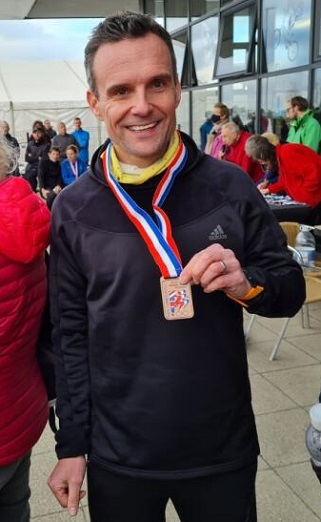

There were three SAC runners at yesterday's 10k race at the Cyclopark in Gravesend, writes Dan Witt. Conditions were chilly, overcast and slightly blustery, but both Jamie Philip and Andrew Hutchinson put the conditions aside and registered great PBs.

Jamie was also awarded a third place medal for his efforts in the M40 category. It's not often that these races take place so locally and as a result there were many strong efforts from the local clubs.
My result was slightly slower than expected as I thought that my first sub 40 minute 10k since 2017 may have been possible but in the end I was relatively happy with my time.
It's not a flat course as it's either up or down for the majority of the tarmac circuit, of which there were 4 laps required for the 10k distance.
The Sevenoaks AC results were as follows:
| Pos | Gun Time | Chip Time | Name | Club | Gender | Category | Race No. | Gen. Pos | Cat. Pos |
|---|---|---|---|---|---|---|---|---|---|
| 17 | 00:34:41 | 00:34:41 | Jamie Philip | Sevenoaks AC | M | Male Vet 40 | 147 | 17 | 3 |
| 43 | 00:38:24 | 00:38:21 | Andrew Hutchinson | Sevenoaks AC | M | Male Vet 40 | 82 | 43 | 8 |
| 69 | 00:40:41 | 00:40:38 | Daniel Witt | Sevenoaks AC | M | Male Vet 45 | 213 | 61 | 15 |
The full results are here. Team and category results are here.